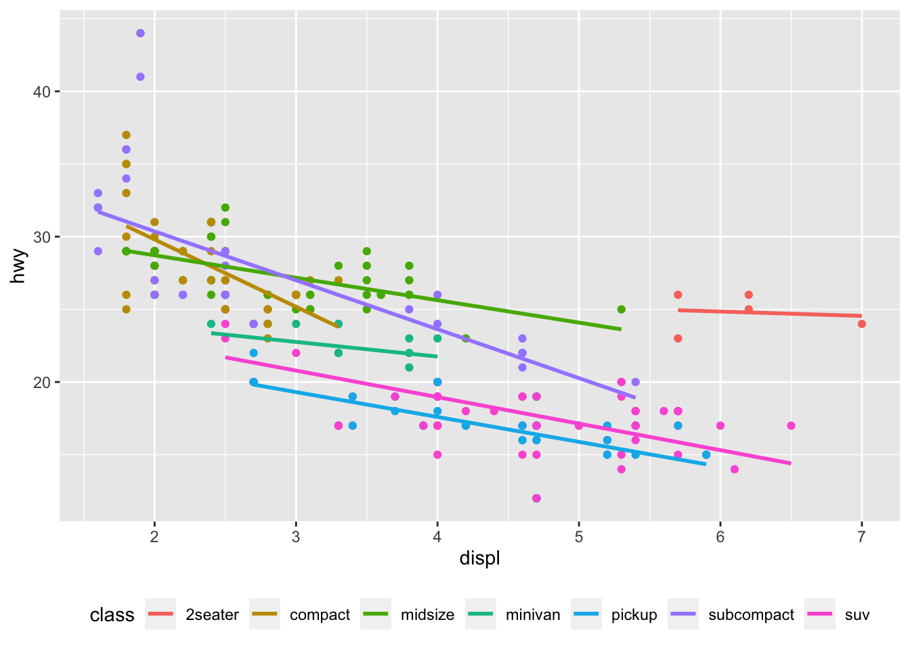

11 Colour scales and legends
11.1 Exercises
drv_labels <- c("4" = "4wd", "f" = "fwd", "r" = "rwd")
ggplot(mpg, aes(displ, hwy)) +
geom_point(aes(colour = drv)) +
scale_colour_discrete(labels = drv_labels)
- We store the labels inside
drv_labelsand use it inscale_colour_discrete()
11.2 Exercises
1. How do you make legends appear to the left of the plot?
-theme(legend.position = “left”)make legends appear to the left of the plot. - Other options:theme(legend.position = “right”),theme(legend.position = “bottom”), andtheme(legend.position = “none”)`
2. What’s gone wrong with this plot? How could you fix it?
- There are two separate legends for the same variable (
drv). We need to combine these two legends into one. To do this, bothcolorandshapeneed to be given shape specifications.
ggplot(mpg, aes(displ, hwy)) +
geom_point(aes(colour = drv, shape = drv)) +
scale_colour_discrete("Drive train",
breaks = c("4", "f", "r"),
labels = c("4-wheel", "front", "rear")) +
scale_shape_discrete("Drive train",
breaks = c("4", "f", "r"),
labels = c("4-wheel", "front", "rear"))
3.
ggplot(mpg, aes(displ, hwy, colour = class)) +
geom_point(show.legend = FALSE) +
geom_smooth(method = "lm", se = FALSE) +
theme(legend.position = "bottom") +
guides(colour = guide_legend(nrow = 1))
#> `geom_smooth()` using formula 'y ~ x'
Note: The answers to these “recreate the code for this plot” questions are provided in the source code of the book.